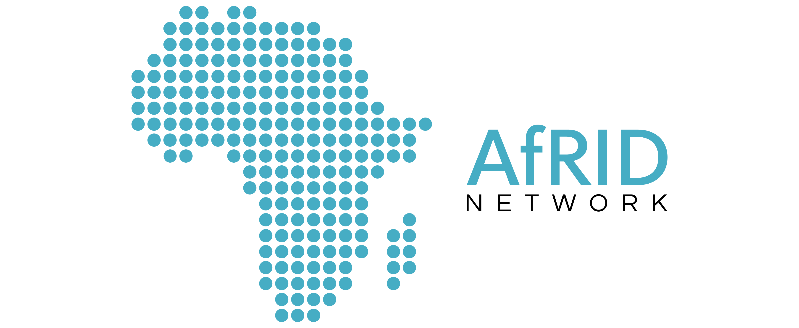

AfRID Networks & Universities
The AFRID Networks & Universities is bringing together a number of peer African institutions and researchers that are willing to work together, with a view to generating a critical mass that could more effectively support development initiatives in the continent.